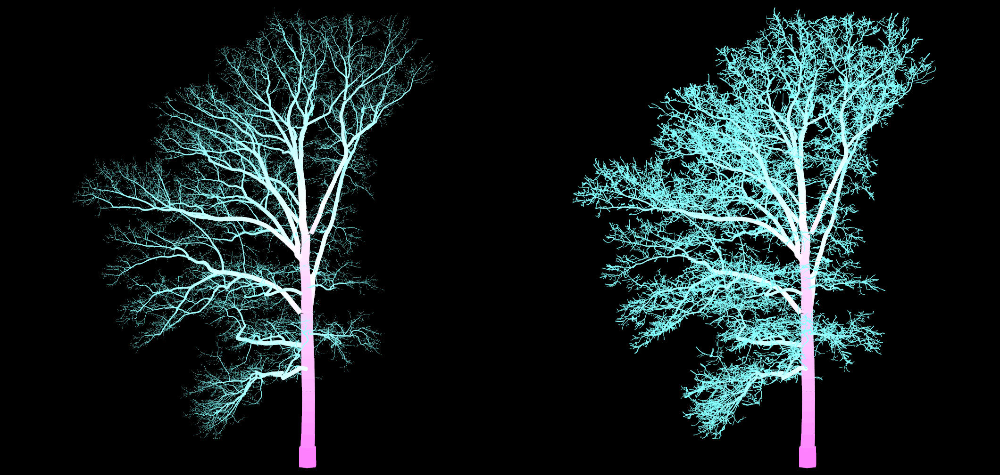
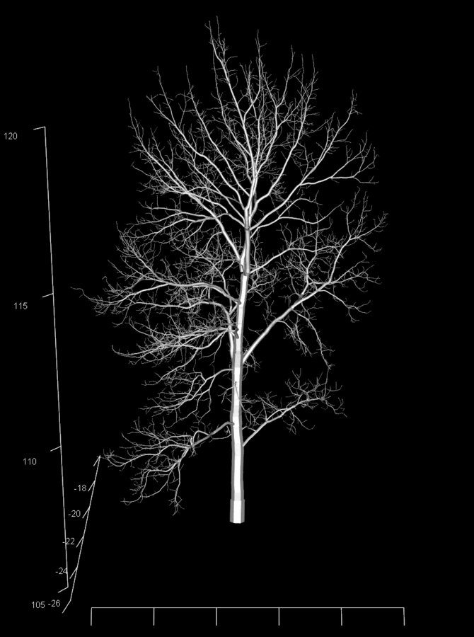
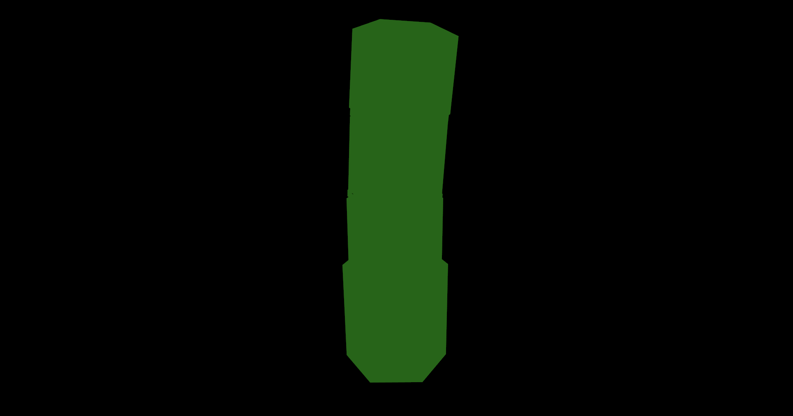
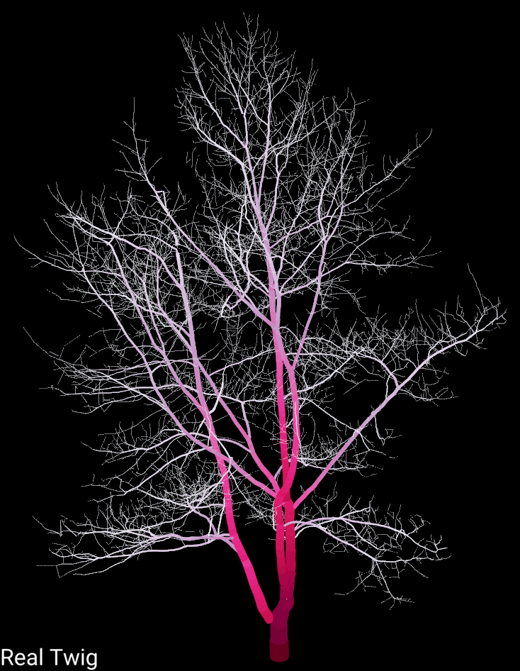
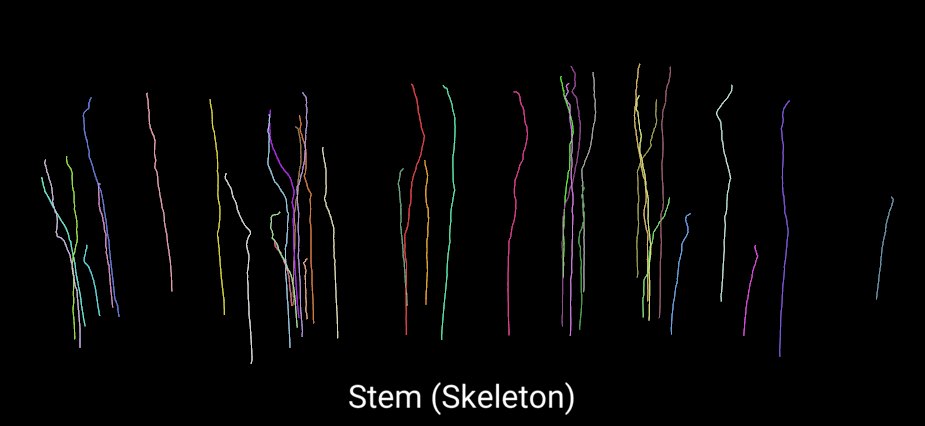
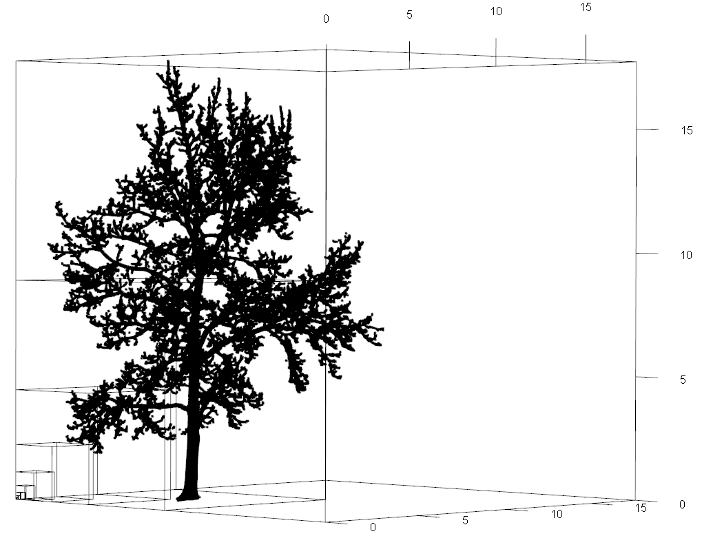

Description
Real Twig is a method to correct unrealistic cylinders in quantitative structure models (QSMs), different than traditional allometric or statistical corrections. Small branch and twig cylinders are overestimated in QSMs due to technical limitations in current LiDAR sensor technology. Real Twig overcomes these limitations by using real and direct twig diameter measurements from corresponding tree species to inform individual path taper models in a QSM. Real Twig dynamically identifies realistic cylinders in a QSM using network analysis, general additive models, and direct twig measurements, to model and correct unrealistic cylinders with a high degree of precision and accuracy when vetted against ground truth reference data. The Real Twig method is presented here as the R package, rTwig.
rTwig includes a novel database of twig diameter measurements for many common North American and European trees, to make the method immediately accessible to the user. In addition, rTwig includes fast and efficient tools for QSM visualization and analysis that are seamlessly compatible with the R ecosystem, and for point cloud fractal analysis and visualization using the box-dimension metric.
Features
Realistic Trees
The main goal of Real Twig was to correct volume overestimation in QSMs caused by the limitations of LiDAR sensors for better non-destructive aboveground biomass estimates. Real Twig incorporates direct measurement into the QSM, resulting in models that not only have accurate volume metrics, but are also visually realistic, independent of tree species or size. Shown below is a 300+ year old white oak tree, with and without Real Twig.

Efficient Visualization
plot_qsm() can plot QSMs and point clouds, using rgl as the 3D display, and C++ via Rcpp to efficiently build the cylinders. The cylinders, simulated point cloud, and skeleton can all be plotted and colored by any variable or user supplied color palette.
|  |  |
|  |  |
Detailed Tree Metrics
The goal of rTwig was to provide users with tools to visualize and analyze QSM metrics without being tied to any particular QSM software. To that end, tree_metrics() calculates all of the major QSM metrics between all supported software. Additionally, standardize_qsm() provides a consistent naming convention between supported QSMs, making it easy to combine and analyze QSMs from different sources. See the Dictionary and Metrics vignettes for more details.
Supported Software
rTwig currently supports TreeQSM, SimpleForest, Treegraph, and aRchi
Functions
-
run_rtwig()runs the Real Twig method on a QSM -
import_qsm()imports a QSM created by TreeQSM (.mat) -
import_treegraph()imports a QSM created by Treegraph (.json) -
standardize_qsm()standardizes QSM variable names across supported software -
update_cylinders()updates cylinder relationships and adds new QSM variables -
correct_radiimodels QSM paths and corrects cylinder radii -
tree_metrics()generates detailed tree metrics and a simulated point cloud -
qsm_summary()summarizes QSM diameter, height, volume, and surface area -
smooth_qsm()connects cylinder end-to-end to smooth branch visualization -
plot_qsm()plots QSMs and optionally their point clouds -
export_mesh()exports a QSM as a mesh object (.ply) -
export_mat()exports a QSM in a MATLAB format (.mat) -
box_dimension()calculates and visualizes the structural complexity of a point cloud
Installation
You can install the released version of rTwig from CRAN with:
install.packages("rTwig")You can install the development version of rTwig from GitHub with:
# install.packages("devtools")
devtools::install_github("aidanmorales/rTwig")Quick Start: Real Twig
Below are examples of how to quickly run and visualize Real Twig, using example data from the package. See the vignettes for more details on a general workflow and best practices.
TreeQSM
# Load the Real Twig library
library(rTwig)
# File path to QSM
file <- system.file("extdata/QSM.mat", package = "rTwig")
# Correct QSM cylinders
qsm <- run_rtwig(file, twig_radius = 4.23)
# Plot the result
plot_qsm(qsm$cylinder)
# View detailed tree metrics
qsm$metricsSimpleForest
# Load the Real Twig library
library(rTwig)
# File path to QSM
file <- system.file("extdata/QSM.csv", package = "rTwig")
# Correct QSM cylinders
qsm <- run_rtwig(file, twig_radius = 4.23)
# Plot the result
plot_qsm(qsm$cylinder)
# View detailed tree metrics
qsm$metricsaRchi
# Load the Real Twig library
library(rTwig)
# File path to QSM
file <- system.file("extdata/QSM2.csv", package = "rTwig")
# Correct QSM cylinders
qsm <- run_rtwig(file, twig_radius = 4.23)
# Plot the result
plot_qsm(qsm$cylinder)
# View detailed tree metrics
qsm$metricsQuick Start: Fractal Analysis
rTwig also includes an efficient function written in C++ via Rcpp for fractal analysis using the voxel-counting method. Below is an example of how to quickly calculate box-dimension on a point cloud using example data from the package. See the vignette for more details and explanation.
# Load a point cloud
file <- system.file("extdata/cloud.txt", package = "rTwig")
cloud <- read.table(file)
# Calculate box-dimension
output <- box_dimension(cloud)
output[[2]]$slope